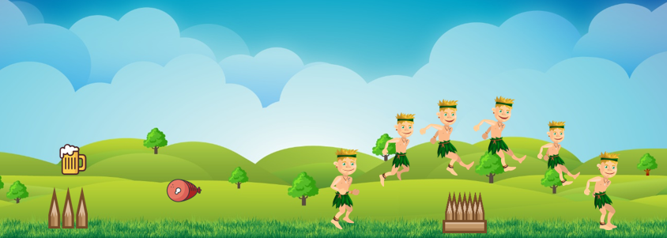

Maquette visuelle de notre projet
Par Yevheniy Zaychenko le 11/03/2019 à 18:00
Dans cette partie nous vous présentons le rendu visuel de notre jeu.

Nous voulons offrir aux joueurs une jouabilité simple. C'est pour cette raison que nous avons décié que le jeu gardera cette interface tout au long de la partie.
Notre héro court automatiquement. Nous n'avons pas besoin d'appuyer sur des touches du clavier. De ce fait, le terrain défilera et plus le personnage avance dans le jeu, plus la vitesse augmente. Le joueur doit juste gérer les obstacles en appuyant sur une touche pour sauter.
Les obstacles sont des clôtures en bois que le héro doit franchir avec des sauts. De plus, tout au long de la partie nous allons rajouter de la difficulté en mettant des objets à ne pas toucher. Nous verrons également si nous souhaitons ajouter des bonus pour augmenter les points.
Finalement, lorsque le héro ne réussit pas à passer par-dessus les obstacles, il meurt et la partie est terminée.